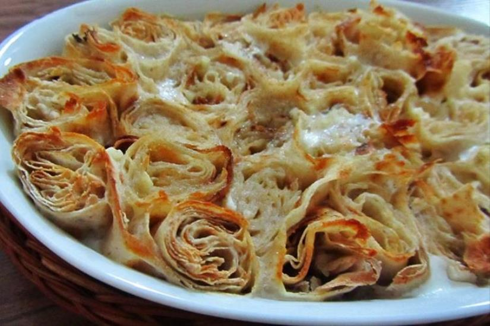

Bingöl Mutfak Kültürü
Doğu’nun Sıcak Sofrası

Bingöl mutfağı, doğunun geleneksel tatlarını yaşatan zengin bir kültüre sahiptir. Etli yemekler, bulgur temelli tarifler ve özgün otlarla hazırlanan yemekler ön plana çıkar.
Ev yapımı yoğurtlar, doğal tereyağları ve baharatların uyumu, Bingöl mutfağını farklı kılar.
- Doğal ve yerel malzemeler
- Et ve yoğurt ağırlıklı yemekler
- Yöresel otlarla yapılan tarifler
- Bulgur ve hamur işleri
Öne Çıkan Yemekler ve Mekan Önerileri

Bingöl Ketesi
İnce katmanlarla yapılan, tereyağlı iç dolgulu geleneksel hamur işi.
Nerede Yenir?
- 📍 Bingöl Evi
- 📍 Lezzet Durağı Fırını
- 📍 Kete Tat Lokantası

Sorina Pel
Yoğurt, bulgur ve sarımsakla hazırlanan, ferahlatıcı bir yöresel çorba.
Nerede Yenir?
- 📍 Bingöl Sofrası
- 📍 Yörem Lokantası
- 📍 Anadolu Mutfağı

Sevenli (Göbek)
Bulgurla hazırlanan, özel baharat ve etle zenginleştirilmiş yöresel pilav çeşidi.
Nerede Yenir?
- 📍 Sevenli Sofrası
- 📍 Bingöl Göbek Mutfağı
- 📍 Fırat Lezzetleri

Kavut
Un, tereyağı ve cevizle yapılan geleneksel enerji deposu tatlı.
Nerede Yenir?
- 📍 Kavut Tatlı Evi
- 📍 Cevizli Sofra
- 📍 Geleneksel Tatlar Bingöl